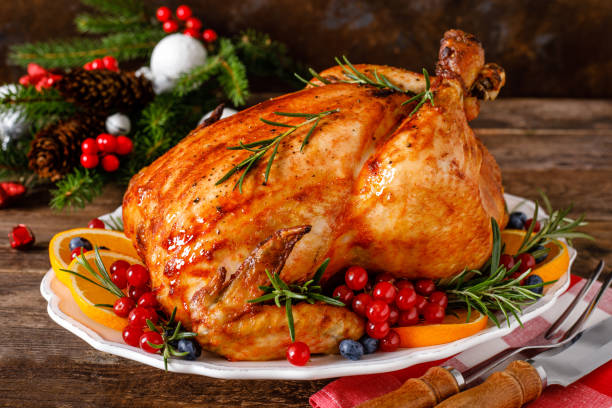
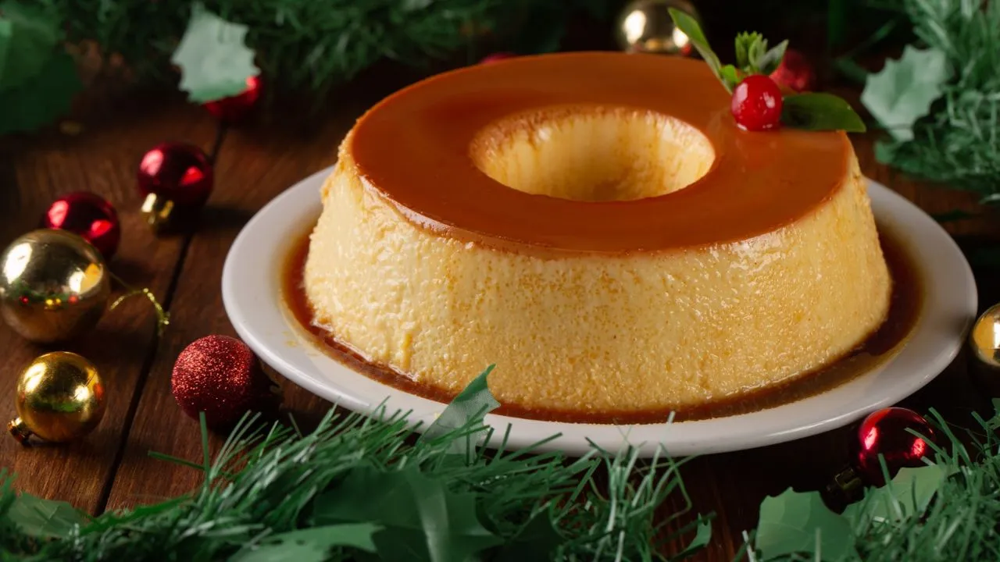
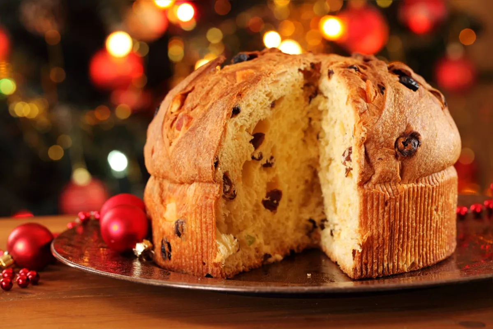

01PERÚ
No Natal, o peru simboliza fartura, abundância, prosperidade e união familiar. Por ser uma ave grande que rende bastante, tornou-se um prato central para compartilhar à mesa com muitas pessoas.

✳ COMIDAS
✳ CULTURA
✳ NATAL
FELIZ NATAL
A comida de Natal tradicional no Brasil reúne pratos festivos divididos entre entradas, principais, acompanhamentos e sobremesas..

01No Natal, o peru simboliza fartura, abundância, prosperidade e união familiar. Por ser uma ave grande que rende bastante, tornou-se um prato central para compartilhar à mesa com muitas pessoas.

02Na Inglaterra, carrega simbolismos ligados à prosperidade, à união familiar e ao tempo do Advento.

03simboliza união, partilha, fartura e celebração em família, consolidado no Brasil pela forte influência da imigração italiana
Imagens ilustrativas dos pratos apresentados.
FELIZ NATAL
Mais do que costumes antigos, as tradições de Natal são pontes que conectam gerações e mantêm viva a nossa história.
Tudo para a sua celebração em família.Símbolo de carinho e generosidade, o costume remonta aos presentes dados pelos Reis Magos. Colocá-los sob a árvore iluminada representa a partilha e a alegria de surpreender quem amamos.
Entre um brinde e outro, os mais velhos compartilham memórias e os mais novos criam lembranças. Um espaço de afeto, escuta e conexão genuína que atravessa o tempo.
Das melodias clássicas de coral aos sinos que anunciam a festa, a música natalina embala os encontros em família, desperta boas memórias e preenche a casa de paz e alegria.
Tradição indispensável nas festas de fim de ano no Brasil, o amigo secreto transforma a troca de presentes em um momento de suspense, boas risadas e carinho entre familiares e amigos.